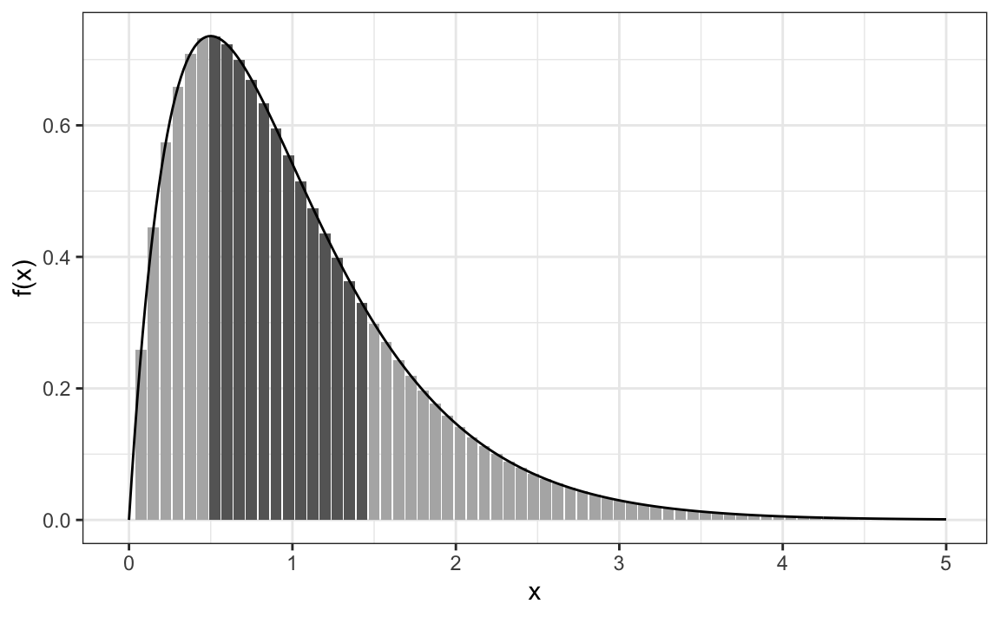
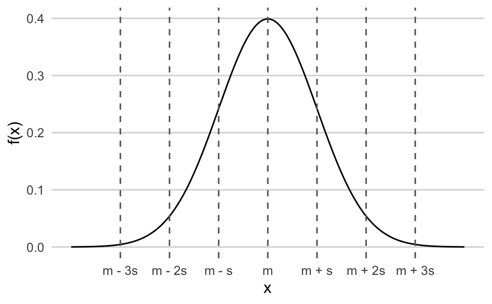
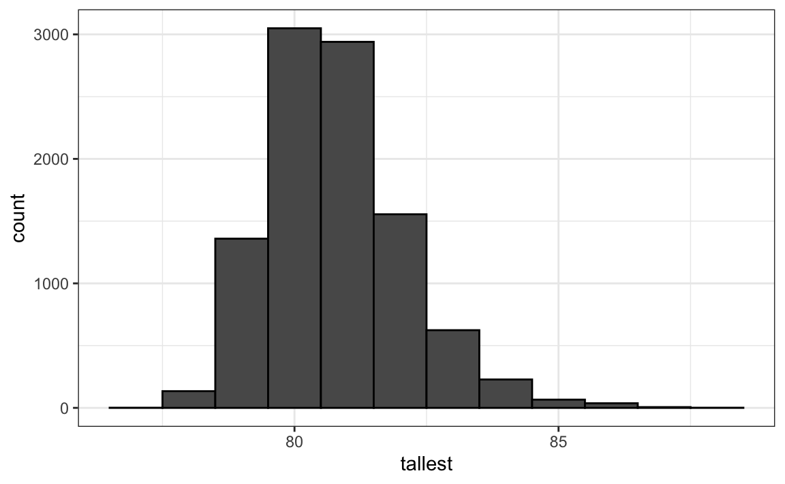

6 Continuous Probability
In ?sec-ecdf-intro, we discussed why it is not practical to assign a frequency to every possible continuous outcome, such as an exact height, since there are infinitely many possible values. The same idea extends to random outcomes that take values on a continuous scale: each individual value has probability zero. Instead, we describe their behavior through probability density functions, which let us compute probabilities for intervals of values rather than single points.
In this chapter, we introduce the mathematical framework for continuous probability distributions and present several useful approximations that frequently appear in data analysis.
6.1 Cumulative distribution functions
We return to our example using the heights of adult male students:
We previously defined the empirical cumulative distribution function (eCDF) as
F <- function(a) mean(x <= a)which, for any value a, gives the proportion of values in the list x that are less than or equal to a.
To connect the eCDF to probability, imagine randomly selecting one of the male students. What is the chance that he is taller than 70.5 inches? Because each student is equally likely to be chosen, this probability is simply the proportion of students taller than 70.5 inches. Using the eCDF, we can compute it as:
1 - F(70.5)
#> [1] 0.363The cumulative distribution function (CDF) is the theoretical counterpart of the eCDF. Rather than relying on observed data, it assigns probabilities to ranges of values for a random outcome \(X\). Specifically, the CDF gives, for any number \(a\), the probability that \(X\) is less than or equal to \(a\):
\[ F(a) = \Pr(X \leq a) \]
Once the CDF is defined, we can compute the probability that \(X\) falls within any interval. For example, the probability that a student’s height is between \(a\) and \(b\) is:
\[ \Pr(a < X \leq b) = F(b) - F(a) \]
Because we can determine the probability of any event from the CDF, it fully defines the probability distribution of a continuous outcome.
6.2 Probability density function
For most continuous distributions, we can describe the cumulative distribution function (CDF) in terms of another function, \(f(x)\), such that
\[ F(b) - F(a) = \int_a^b f(x)\,dx \]
This function \(f(x)\) is called the probability density function (PDF).
The PDF plays a role similar to the relative frequency distribution for discrete data. The key difference is that for a continuous variable, individual values have probability zero, so instead of assigning probability to specific outcomes, the PDF shows how probability is spread across the range of possible values of \(x\). The probability that the variable falls within an interval, say \([a,b]\), is given by the area under the curve between \(a\) and \(b\). Thus, the shape of the PDF shows where values are more or less likely to occur, with wider or higher regions corresponding to ranges that contain more probability mass.
To build intuition for why we use a continuous function and an integral to describe probabilities, consider a situation where an outcome can be measured with very high precision. In this case, we can think of the relative frequency as being proportional to the height of the bars in the plot below:

The probability of the outcome falling within an interval, for example, \(x \in [0.5, 1.5]\), can be approximated by adding the heights of the bars within that range and dividing by the total height of all bars. As the measurement becomes more precise and the bar widths become narrower, this sum approaches the area under the curve of the continuous function \(f(x)\).
In the limit where the bar widths shrink to zero, the sum and the integral are identical: the probability of \(x\) falling in an interval is exactly the area under \(f(x)\) over that interval. To make this work, we define \(f(x)\) so that the total area under the curve equals 1:
\[ \int_{-\infty}^{\infty} f(x) \, dx = 1 \]
This ensures that \(f(x)\) represents a valid PDF.
An important example of a PDF is the normal distribution, introduced in Section 2.1. Its probability density function is
\[ f(x) = \frac{1}{\sqrt{2\pi}\,\sigma} \exp\left(-\frac{1}{2}\left(\frac{x - \mu}{\sigma}\right)^2\right) \]
and as we previous saw has a bell shaped centered at \(\mu\) and 95% of the area with \(2\sigma\) from \(\mu\):

In R, this function this PDF is given by dnorm and the corresponding CDF by pnorm.
A random outcome is said to be normally distributed with mean m and standard deviation s if its CDF is defined by
This is particularly useful in practice. If we are willing to assume that a variable, such as height follows a normal distribution, we can answer probability questions without needing the full dataset. For example, to find the probability that a randomly selected student is taller than 70.5 inches, we only need the sample mean and standard deviation:
Good — your existing “Theoretical distributions as approximations” section is clear and conceptually sound, but it overlaps heavily with what you already explain in “The normal distribution” (particularly where you discuss approximating discrete data with a continuous normal curve).
6.3 Theoretical distributions as practical models
Theoretical distributions, such as the normal distribution, are defined mathematically rather than derived directly from data. In practice, we use them to approximate the behavior of real data that arise from complex or unknown processes. Almost all datasets we analyze consist of discrete observations, yet many of these quantities, such as height, weight, or blood pressure, are better understood as measurements of underlying continuous variables.
For example, our height data appear discrete because values are typically rounded to the nearest inch. A few individuals report more precise metric measurements, while most round to whole inches. It is therefore more realistic to think of height as a continuous variable whose apparent discreteness comes from rounding.
When using a continuous distribution such as the normal, we no longer assign probabilities to individual points, each exact value has probability zero, but rather to intervals. In Chapter 2 we showed how this theoretical distributions can approximate.
The key idea is that theoretical distributions serve as useful approximation. They provide smooth mathematical descriptions that let us compute probabilities and reason about uncertainty. Even though real measurements are discrete, the continuous approximations that apply, such as the normal distribution, allow us to work with data analytically and build models that generalize well beyond a specific dataset.
6.4 Monte Carlo simulations
Simulation is a powerful way to understand randomness, approximate probabilities, and explore how theoretical models behave in practice. Many of the probability models used in data analysis are continuous distributions, which describe outcomes that can take any value within a range. In R, all random-number–generating functions that produce simulated data from a continuous distribution, begin with the letter r. These functions form part of a consistent family that allows us to simulate from nearly any probability distribution. In this section, we illustrate Monte Carlo techniques using continuous distributions, starting with the normal distribution and extending to other commonly used models.
Normal distribution
R provides the rnorm function to generate normally distributed outcomes. It takes three arguments, sample size, mean (default 0), and standard deviation (default 1), and produces random numbers that follow a normal distribution.
Here is an example of how we could generate data that resemble our reported heights:
Not surprisingly, the distribution of the simulated heights looks normal:

This is one of the most useful functions in R because it lets us generate data that mimic natural variation and explore what outcomes might occur by chance through Monte Carlo simulations.
Example: extreme values
How rare is it to find a seven-footer among 800 men? Suppose we repeatedly sample 800 male students at random and record the tallest in each group. What does the distribution of these tallest height look like? The following Monte Carlo simulation helps us find out:
Having a seven-footer is quite rare:
mean(tallest >= 7*12)
#> [1] 0.0192Here is the resulting distribution of the tallest person’s height:

Although deriving this distribution analytically is possible, it is not straightforward. Once derived, it provides a faster way to evaluate probabilities than simulation. However, when analytic derivations are too complex or infeasible, Monte Carlo simulation offers a practical alternative. By repeatedly generating random samples, we can approximate the distribution of almost any statistic and obtain reliable estimates even when theoretical results are unavailable.
Other continuous distributions
The normal distribution is not the only useful theoretical model. Other continuous distributions that often appear in data analysis include the Student’s t, chi-square, exponential, gamma, and beta distributions. Their corresponding shorthand names in R are t, chisq, exp, gamma, and beta.
Each of these distributions has an associated r function, such as rt, rchisq, rexp, rgamma, and rbeta, that allows you to generate random samples for simulation. This consistency makes it easy to apply Monte Carlo methods to a wide variety of data-generating processes.
6.5 Calculating densities, probabilities, and quantiles
Beyond simulation, R provides companion functions to evaluate and summarize continuous distributions. Each distribution in base R follows a simple naming convention:
-
d- density function -
p- cumulative distribution function (CDF) -
q- quantile function -
r- random number generation
For example, the Student’s t distribution uses dt, pt, qt, and rt. Base R includes the most common continuous distributions, normal, t, chi-square, exponential, gamma, and beta, but many additional distributions are available in specialized packages such as extraDistr and actuar. While there are dozens of continuous distributions in use, the ones provided by base R cover the majority of applications encountered in practice.
6.6 Exercises
1. Assume the distribution of female heights is approximated by a normal distribution with a mean of 64 inches and a standard deviation of 3 inches. If we pick a female at random, what is the probability that she is 5 feet or shorter?
2. Assume the distribution of female heights is approximated by a normal distribution with a mean of 64 inches and a standard deviation of 3 inches. If we pick a female at random, what is the probability that she is 6 feet or taller?
3. Assume the distribution of female heights is approximated by a normal distribution with a mean of 64 inches and a standard deviation of 3 inches. If we pick a female at random, what is the probability that she is between 61 and 67 inches?
4. Repeat the exercise above, but convert everything to centimeters. That is, multiply every height, including the standard deviation, by 2.54. What is the answer now?
5. Notice that the answer to the question does not change when you change units. This makes sense since the standard deviations from the average for an entry in a list are not affected by what units we use. In fact, if you look closely, you notice that 61 and 67 are both 1 SD away from the average. Compute the probability that a randomly picked, normally distributed random variable is within 1 SD from the average.
6. To understand the mathematical rationale that explains why the answers to exercises 3, 4, and 5, suppose we have a random variable \(X\) with average \(\mu\) and standard error \(\sigma\) and that we ask what is the probability of \(X\) being smaller or equal to \(a\). The probability is:
\[ \mathrm{Pr}(X \leq a) \] Remember that, by definition, \(a\) is \((a - \mu)/\sigma\) standard deviations \(s\) away from the average \(\mu\). Now we subtract \(\mu\) to both sides and then divide both sides by \(\sigma\):
\[ \mathrm{Pr}\left(\frac{X-\mu}{\sigma} \leq \frac{a-\mu}{\sigma} \right) \]
The quantity on the left is a standard normal random variable. It has an average of 0 and a standard error of 1. We will call it \(Z\):
\[ \mathrm{Pr}\left(Z \leq \frac{a-\mu}{\sigma} \right) \]
So, no matter the units, the probability of \(X\leq a\) is the same as the probability of a standard normal variable being less than \((a - \mu)/s\).
If m is the average and s the standard error, which of the following R code would give us the right answer in every situation?
mean(X <= a)pnorm((a - m)/s)pnorm((a - m)/s, m, s)pnorm(a)
7. Imagine the distribution of male adults is approximately normal with an expected value of 69 and a standard deviation of 3. How tall is the male in the 99th percentile? Hint: use qnorm.
8. IQ scores are approximately normally distributed, with a mean of 100 and a standard deviation of 15. Suppose we want to know what the distribution of the highest IQ would look like across all high school graduating classes if 10,000 people are born each year in a school district. Run a Monte Carlo simulation with B = 1000, where each iteration generates 10,000 IQ scores and records the highest value. Then, create a histogram to visualize the distribution of the maximum IQ in the district.